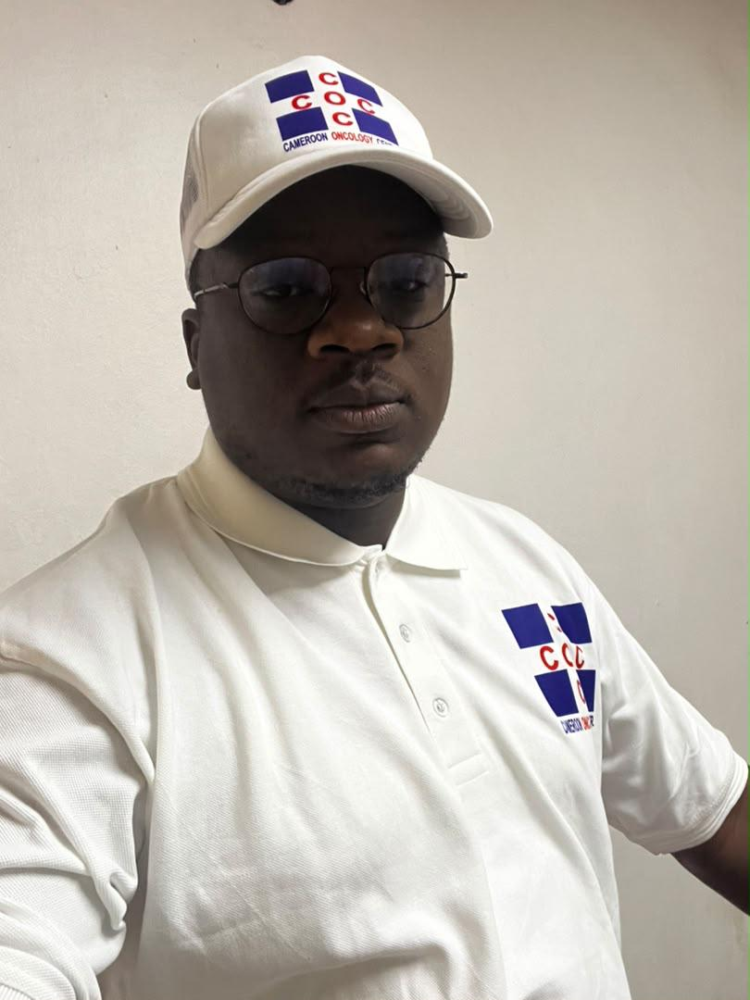
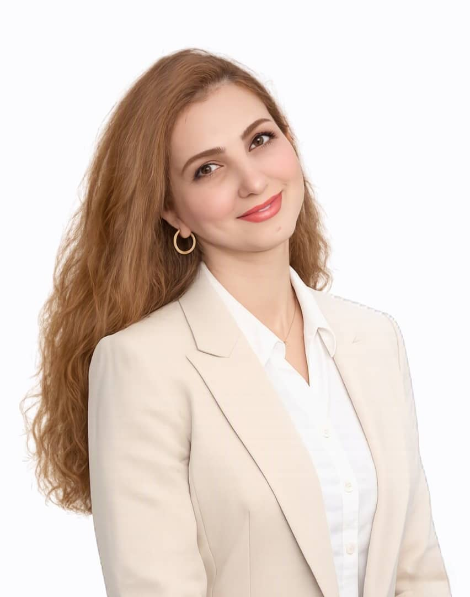

1
Consultation
Assessment by the radiation oncology team, review of imaging and pathology, and discussion of treatment options.

Precision radiotherapy supported by experienced radiation oncologists, medical physicists, radiation therapists, advanced planning and a strong culture of quality and safety.
Each treatment course is individualized according to diagnosis, stage, treatment intent, anatomy and the patient's overall clinical condition.
Assessment by the radiation oncology team, review of imaging and pathology, and discussion of treatment options.
The patient is positioned and imaged in the treatment position so the treatment area and organs at risk can be defined accurately.
The treatment plan is created and reviewed by the radiation oncologist and medical physics team before delivery.
Treatment is delivered over the prescribed schedule with clinical review, image guidance when indicated, and ongoing follow-up.

COC's radiation oncology program combines clinical expertise, treatment planning, medical physics, radiation therapy and engineering support. The program uses Varian linear accelerators, Philips Big Bore CT simulation and Eclipse treatment planning.
All identifiable staff photographs shown below are the original photographs supplied by Cameroon Oncology Center. No AI-generated portraits are used.

Full-time radiation oncologist providing clinical leadership for radiotherapy and multidisciplinary cancer care.

Full-time radiation oncologist supporting consultation, treatment planning, treatment review and follow-up.
Senior adviser to COC with weekly consultation and academic/clinical guidance.

International specialist partner providing expert radiation oncology collaboration and tele-oncology support.

Leads medical physics activities supporting treatment planning, dosimetry, quality assurance and safe radiotherapy delivery.
Supports treatment planning, dosimetry, treatment-plan verification, quality assurance and safe technical delivery of radiotherapy.
Leads a team of six Radiation Therapists in CT simulation, immobilization, patient positioning and daily radiation treatment delivery.
Support CT simulation, daily treatment delivery, patient positioning and mold-room/immobilization duties. Together with the Chief Radiation Therapist, COC has six Radiation Therapists.
Provides engineering and technical support for radiotherapy equipment and infrastructure to support continuity of clinical operations.
COC's radiotherapy quality program includes internal physics QA and external verification records that patients, families and referring physicians can review.
COC has documentation of independent dosimetry and IMRT phantom verification. The supporting report is available for direct viewing.
COC also maintains supporting external output-check documentation for the radiotherapy machine.
Contact COC for consultation, referral coordination or treatment planning information.